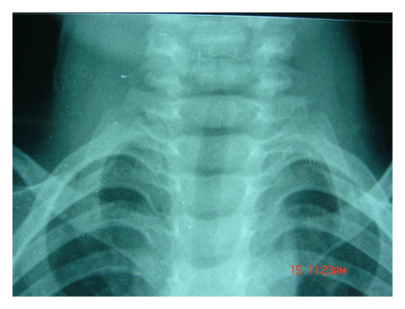

105 年第 1 次醫師醫學（四）（包括小兒科、皮膚科、神經科、精神科等科目及其相關臨床實例與醫學倫理）試題與答案
這一頁是民國 105 年第 1 次醫師醫學（四）（包括小兒科、皮膚科、神經科、精神科等科目及其相關臨床實例與醫學倫理）的整份歷屆試題，共 80 題，題目與標準答案出自考選部「國家考試試題及測驗式試題答案」開放資料。以下逐題列出題幹、選項與答案；要計時作答或記錄成績，請用線上練習。
考選部原始場次代碼：105020
線上作答這一科 →
全部 80 題
第 1 題
一位4歲女童，因高燒5天及喉嚨疼痛就醫，給予ampicillin後出現如圖一所示的全身皮疹，同時發現其有眼皮浮腫和如圖二的扁桃腺變化。最可能的致病原為何？圖一 圖二

- （A）腸病毒（enterovirus）
- （B）EB病毒（Epstein-Barr virus）
- （C）麻疹病毒（measles virus）
- （D）德國麻疹病毒（rubella virus）
答案：（B）
第 2 題
下列何種情況不屬於腸病毒重症的特徵？
- （A）發病超過7天
- （B）出現類似驚嚇的全身性肢體抽動伴有心跳快或血壓高
- （C）年齡小於5歲
- （D）持續嘔吐
本題送分，無標準答案
第 3 題
核黃疸（kernicterus）的定義是指間接型膽紅素（unconjugated bilirubin）沈積在下列何處？
- （A）腦膜
- （B）基底核
- （C）小腦
- （D）腦室旁
答案：（B）
第 4 題
新生兒比大人更容易散失熱量，其原因是：
- （A）心跳、呼吸速率較快
- （B）體表面積與體重比值較高
- （C）棕色脂肪代謝率較快
- （D）血液甲狀腺素較高
答案：（B）
第 5 題
下列何者不是造成新生兒先天性感染之重要病原體？
- （A）巨細胞病毒
- （B）梅毒螺旋體
- （C）弓蟲症
- （D）麻疹病毒
答案：（D）
第 6 題
下列有關新生兒暫時性呼吸急促（transient tachypnea of newborn）胸部X光變化，何者錯誤？
- （A）肺門的浸潤增加
- （B）常常可見到minor fissure
- （C）胸部X光的不正常影像，常可持續4天以上
- （D）偶爾可見到少量的肋膜積液
答案：（C）
第 7 題
造成早發性（early-onset）新生兒感染的細菌中，最常見的格蘭氏陽性菌為：
- （A）金黃色葡萄球菌
- （B）B群鏈球菌
- （C）肺炎雙球菌
- （D）大腸桿菌
答案：（B）
第 8 題
有關營養素的吸收之敘述，下列何者錯誤？
- （A）蛋白質，須分解成胺基酸才能吸收
- （B）麥芽糖，須分解成單醣才能吸收
- （C）脂肪，須分解成單一脂肪酸才能吸收
- （D）乳糖，分解成半乳糖及葡萄糖，才能吸收
本題送分，無標準答案
第 9 題
12歲男生，解血便前來求診。身體診察發現嘴唇有黑色斑點如下圖，最可能的疾病是：

- （A）Peutz-Jeghers syndrome
- （B）familial polyposis coli
- （C）Gardner's disease
- （D）flat villous adenoma
答案：（A）
第 10 題
下列何者是兒童肥胖的最佳預測指標？
- （A）出生體重過重
- （B）父母肥胖
- （C）隔代教養
- （D）單一子女
答案：（B）
第 11 題
一個8個月大的男童因第一次尿道感染住院，膀胱尿道攝影檢查（voidingcystourethrogram）顯示如附圖，你會如何給父母親建議？

- （A）接受外科手術治療
- （B）建議接受局部玻尿酸注射治療
- （C）建議使用抗生素預防感染
- （D）建議只要觀察有無復發性感染，暫不需任何治療
答案：（C）
第 12 題
下列何者最不可能造成高容積性低血鈉症（hypervolemic hyponatremia）？
- （A）低醛固酮血症（hypoaldosteronism）
- （B）急性腎小管壞死（acute tubular necrosis）初期
- （C）腎病症候群（nephrotic syndrome）
- （D）鬱血性心臟病（congestive heart disease）
答案：（A）
第 13 題
一位5歲的男童幾天前有呼吸道感染，這兩天出現眼皮浮腫，陰囊水腫。尿液檢查顯示尿蛋白>300 mg/dL，RBC 0～2/HPF，血中白蛋白1.9 gm/dL，醫師給予類固醇治療4週之後，再次檢測尿蛋白為陰性反應，下列何者最可能是男童的診斷？
- （A）微小變化型腎病變 （minimal change nephropathy）
- （B）IgA腎炎（IgA nephritis）
- （C）局部巢狀絲球硬化（focal segmental glomerulosclerosis）
- （D）膜性腎炎（membranous nephropathy）
答案：（A）
第 14 題
出生體重低於1000公克的早產兒發生腦性麻痺（cerebral palsy）機率較高，是因為這類嬰兒較易有何種腦部病變發生？
- （A）brain malformation
- （B）subdural hematoma
- （C）congenital meningitis
- （D）peri-ventricular leukomalacia
答案：（D）
第 15 題
2歲的男孩因不會講話而求診。他在1歲時可以放手走，現在會爬上下椅子。仍不會叫爸爸或媽媽，叫他不理人。有關其進一步的處置，下列何者敘述錯誤？
- （A）應安排發展聯合評估
- （B）應排除聽力障礙，做聽力檢查
- （C）可能為自閉症的表徵
- （D）應做腦部磁振造影檢查
答案：（D）
第 16 題
有關抗癲癇藥物之使用原則，下列何者錯誤？
- （A）藥物選擇依癲癇分類而定
- （B）逐漸增量而非馬上給予最高劑量
- （C）原則上使用兩種藥物優於單一藥物，避免發生抗藥性
- （D）藥物在體內之代謝速率有個別差異
答案：（C）
第 17 題
關於男童性早熟（precocious puberty），下列那一項的致病機轉與其他三者不同？
- （A）下視丘錯構瘤（hypothalamic hamartoma）
- （B）分泌人類絨毛膜性腺促素（hCG-secreting）的松果腺腫瘤（pineal tumor）
- （C）先天性腎上腺增生（congenital adrenal hyperplasia）
- （D）萊氏細胞瘤（Leydig cell tumor）
答案：（A）
第 18 題
下列那一種胰島素在人體內的作用時間最長？
- （A）regular insulin
- （B）NPH或Lente insulin
- （C）lispro或aspart
- （D）glargine
答案：（D）
第 19 題
下列藥物何者不適合使用於輕度持續性氣喘患者作為長期控制藥物？
- （A）吸入型低劑量類固醇（corticosteroid）
- （B）吸入型長效beta 2交感神經促進劑（long acting beta 2 agonist）
- （C）吸入型cromolyn sodium
- （D）口服緩釋型茶鹼（sustained release theophylline）
答案：（B）
第 20 題
6歲男童在2週以前有感冒症狀，最近2～3天發生腹絞痛和膝關節疼痛，隔日解黑便且下肢和臀部出現鼓起的出血點，尿液檢查顯示紅血球10～15/HPF，最有可能診斷是下列何種疾病？
- （A）特發性血小板減少紫斑症（idiopathic thrombocytopenic purpura）
- （B）急性白血病（acute leukemia）
- （C）急性腎絲球腎炎（acute glomerulonephritis）
- （D）過敏性紫斑症（Henoch-Schönlein purpura）
答案：（D）
第 21 題
一位1歲男童體重有7公斤、身高68公分，母親說，孩童打完卡介苗後其注射位置直到目前尚無法癒合。男童自從2個月大開始，便有反覆性腹瀉、肺炎，一般CBC/DC檢查，一直都是lymphopenia 980/mm3，lymphocyte subsets顯示CD3+ 2%、CD4+ 1%、CD8+ 1%、CD19+ 85%、CD16+ CD56+(NK cell) 5%；immunoglobulin(Ig) level顯示IgG 86 mg/dL、IgA 5 mg/dL、IgM undetectable、IgE < 5 IU/mL。對此男童的治療原則是：
- （A）積極使用治療性抗生素及預防性抗生素，終身規則性IVIG，即可有高生活品質，毋需考慮stem cell transplantation
- （B）在治療控制穩當後，積極執行stem cell transplantation
- （C）待基因突變確定後，方能擬定明確的治療計畫
- （D）病人最有可能的診斷為Bruton agammaglobulinemia
答案：（B）
第 22 題
下列何者為急性淋巴性白血病（ALL）最不好的預後因子？
- （A）染色體數過多（hyperdiploidy）
- （B）病發時年紀介於2歲至9歲之間
- （C）有費城染色體（Philadelphia chromosome）
- （D）minimal residual disease（MRD）在induction後已不存在
答案：（C）
第 23 題
關於輕型α海洋性貧血（α-thalssemia minor or trait）之敘述，下列何者錯誤？
- （A）不需治療的病人，可能一輩子都不會出現心臟代償的問題
- （B）血色素電泳分析（hemoglobin electropheresis)的報告在正常範圍
- （C）未經治療的病人不會有嚴重的骨髓外造血
- （D）做血液常規檢查（CBC）時，絕大部分的病人紅血球容積（MCV）與血色素含量（MCH）不會明顯下降
答案：（D）
第 24 題
一位4歲男孩，在一次上呼吸道感染後，父母發現男孩臉色較蒼白，而到門診就診。血液檢查結果如下：WBC：4,200/mm3、segment 45%、lymphocyte 50%、RBC：3.2×106/mm3、Hb：7.2 g/dL、Hct：28%、MCV：83 fL、MCH：31 pg、MCHC：37.4g/dL、血小板：250,000/mm3、reticulocyte 3.2%。身體診察發現有脾臟腫大現象，他的下列那項檢查結果最可能有異常？
- （A）血色素電泳（Hb electrophoresis）
- （B）鐵蛋白（ferritin）
- （C）血中鉛濃度
- （D）紅血球滲透壓脆性試驗（RBC osmotic fragility test）
答案：（D）
第 25 題
下列何種情況，最不可能會有寬的脈搏壓（wide pulse pressure）？
- （A）甲狀腺機能亢進
- （B）貧血
- （C）主動脈瓣逆流
- （D）二尖瓣狹窄
答案：（D）
第 26 題
本題附圖之嬰兒胸部X光可看到什麼？

- （A）胸腺（thymus）
- （B）心臟擴大（cardiomegaly）
- （C）肺炎（pneumonia）
- （D）肺出血（pulmonary hemorrhage）
答案：（A）
第 27 題
QT間距延長症候群（long QT syndrome）是一種先天性心臟離子通道病變（channelopathy）。下列何種藥物有可能加重其QT延長之變化，應避免？①clarithromycin②amiodarone ③acetaminophen ④haloperidol
- （A）①②③
- （B）②③④
- （C）①③④
- （D）①②④
答案：（D）
第 28 題
先天性遺傳代謝疾病患童常散發出特異性體味，下列之對應組合中何者最不正確？
- （A）苯酮尿症（phenylketonuria）– 霉臭味（musty odor）
- （B）異戊酸血症（isovaleric acidemia）– 腳汗臭味（sweaty feet odor）
- （C）酪胺酸血症（tyrosinemia）– 泳池消毒水味（swimming pool odor）
- （D）三甲基胺尿症（trimethylaminuria）– 腐魚味（rotten fish odor）
答案：（C）
第 29 題
一名3歲男孩因為跌倒後大腿骨折而住院，身體診察發現有藍色鞏膜（blue sclera），部分皮膚呈現瘀青斑（bruising spots），全身關節亦較鬆弛，影像檢查顯示下肢長骨（longbone）輕度彎曲並有骨折舊傷與骨質疏鬆（osteoporosis, Z score: -3.0），血中鈣及磷離子濃度正常，家族史中母親也有藍色鞏膜及青春期前重覆骨折病史，關於此病童所罹患的疾病，下列敘述何者最不正確？
- （A）它是第一型膠原蛋白（type I collagen）質量缺陷所致的易碎骨頭症（brittle bonedisease）
- （B）雙磷酸鹽（bisphosphonate）有增進造骨母細胞（osteoblast）功能改善骨質密度並減少骨折
- （C）它是一種以體染色體顯性方式遺傳的結締組織疾病，常合併身材矮小或早發性聽力障礙
- （D）此疾病患者病程預後主要與是否有反覆肺炎或心肺血管功能異常程度有關
答案：（B）
第 30 題
一位1歲的小孩這2天有感冒的症狀，食慾減退。早上起床時母親發現他意識不清，呼吸困難。送到醫院後抽血發現血糖值只有10 mg/dL，而且乳酸非常高。醫師同時發現病童的肝臟很大，在肋骨下緣8公分。最可能的診斷為下列何者？

- （A）高胰島素血症
- （B）肝醣儲積症Ia型
- （C）有機酸血症
- （D）急性肝炎
答案：（B）
第 31 題
一個3歲男童，發燒、咳嗽三天，並有喉嚨痛與聲音沙啞。血液檢查白血球11000/uL， 其中segment 佔 45%， lymphocyte 占50%，monocyte占3%， eosinophil占2%。身體診察肺部呼吸音較粗（coarse breathingsound），沒有囉音（rales）或喘鳴聲（wheezing）。請依此回答下列3題。X檢查如下，臨床診斷最有可能為下列何者？
- （A）哮吼（croup）
- （B）喉頭軟化（laryngomalacia）
- （C）扁桃腺炎（tonsillitis）
- （D）細菌性氣管炎（bacterial tracheitis）
答案：（A）
第 32 題
承上題，想要確定致病原因，應執行何種檢查？
- （A）支氣管鏡檢查
- （B）咽喉細菌培養
- （C）咽喉病毒培養
- （D）抽血做黴漿菌抗體檢測
答案：（C）
第 33 題
病童經過處置後燒退兩天，咳嗽減輕，但突然又開始發燒到 39.1℃，咳嗽加重，有痰聲。此時診斷為下列何者？
- （A）過敏性氣喘發作
- （B）治療藥物的副作用
- （C）再次罹患上呼吸道感染
- （D）併發細菌性支氣管肺炎
答案：（D）
第 34 題
貼膚試驗（patch test） 是下列何種皮膚疾病的標準診斷方法？
- （A）乾癬（psoriasis）
- （B）多形性紅斑（erythema multiforme）
- （C）慢性蕁麻疹（chronic urticaria）
- （D）過敏性接觸性皮膚炎（allergic contact dermatitis）
答案：（D）
第 35 題
關於異位性皮膚炎（atopic dermatitis）的處置，下列何者錯誤？
- （A）外用局部皮質類固醇藥劑
- （B）紫外線光照治療
- （C）使用潤膚劑
- （D）外用維生素D3及其衍生物
答案：（D）
第 36 題
下列關於乾癬（psoriasis）的敘述，何者錯誤？
- （A）好發於兒童
- （B）好發部位為頭部、肘膝和軀幹
- （C）部分病人會合併乾癬性關節炎（psoriatic arthritis）
- （D）病灶特徵為境界鮮明、表面有白色鱗屑之紅色斑塊
答案：（A）
第 37 題
關於成人型脂漏性皮膚炎（seborrheic dermatitis）的敘述，下列何者錯誤？
- （A）好發於四肢伸側
- （B）病灶表面常伴有鱗屑
- （C）感染人類免疫不全病毒（HIV）的患者，罹患此病之機率及嚴重度增加
- （D）抗黴菌製劑ketoconazole對此病之治療有效
答案：（A）
第 38 題
68歲男性，主訴5年前開始，顏面出現如左圖箭頭所示之病變，病理檢查如右圖所示。下列何者為最適當的診斷？

- （A）日光性角化症（actinic keratosis）
- （B）盤狀紅斑性狼瘡（discoid lupus erythematosus）
- （C）脂漏性角化症（seborrheic keratosis）
- （D）基底細胞癌（basal cell carcinoma）
答案：（A）
第 39 題
下列色素性病變何者常於中年後發生？
- （A）nevus of Ota（nevus fuscocaeruleus ophthalmomaxillaris）
- （B）ephelides（freckle）
- （C）mongolian spot
- （D）nevus of Hori（bilateral nevus of Ota-like macules）
答案：（D）
第 40 題
30歲男性左前臂之皮膚病灶如圖，據患者描述此病灶約2至3歲即出現，最適宜之診斷為何？

- （A）雀斑（freckles）
- （B）肝斑（melasma）
- （C）斑痣（nevus spilus）
- （D）咖啡牛奶斑（café-au-lait spot）
答案：（C）
第 41 題
26歲的女性，約從十歲起，身上便開始出現搔癢的角化丘疹如圖（一），數目時多時少，夏天工作流汗時會變得較嚴重。指甲板上出現紅白相間的長帶，及游離端有V字型的凹缺如圖（二）所示，下列有關此疾病之敘述何者正確？圖（一） 圖（二）

- （A）臨床病灶易發生於脂漏性區域（seborrheic area）
- （B）屬體染色體隱性遺傳
- （C）口服類固醇是最好的治療方式
- （D）突變基因為ATP2C2 gene，其功能為調節細胞鈣離子濃度
答案：（A）
第 42 題
20歲女性，患有異位性皮膚炎，最近一週在臉上出現如圖之病變，下列敘述何者正確？

- （A）異位性皮膚炎之惡化
- （B）念珠菌感染
- （C）單純疱疹病毒感染
- （D）皮癬菌感染
答案：（C）
第 43 題
承上題，下列何項為正確的處置？
- （A）外用類固醇藥膏
- （B）口服fluconazole
- （C）口服valacyclovir
- （D）外用抗生素藥膏
答案：（C）
第 44 題
20歲女性，近一個月在小腿出現疼痛的紅紫色結節（如圖）；一年前開始反覆出現口腔潰瘍，曾因為葡萄膜炎（uveitis）在眼科就診，最可能之診斷為何？

- （A）疤痕性 天疱瘡（cicatricial pemphigoid）
- （B）多形性紅斑（erythema multiforme）
- （C）尋常性天疱瘡（pemphigus vulgaris）
- （D）貝 特氏病（Behçet’s disease）
答案：（D）
第 45 題
承上題，下列敘述，何者錯誤？
- （A）全世界各國都有，以美國發生率最高
- （B）pathergy test陽性
- （C）少數病人會合併中樞神經系統併發症
- （D）亞洲人與可能與HLA-B5及HLA-B51有關
答案：（A）
第 46 題
50歲男性，整脊後不適至急診，腦部磁振照影顯示有右側延腦內側梗塞（infarction of rightmedial medulla），可能有那些症狀表現：①右側臉麻 ②左側肢體無力 ③右側肢體失調（dysmetria） ④右側舌頭無力
- （A）①③
- （B）②④
- （C）①④
- （D）②③
答案：（B）
第 47 題
60歲男性，有高血壓與糖尿病的病史，因急性神經症狀就醫，腦部磁振照影檢查顯示為急性小洞梗塞（lacunar infarction），下列那些是小洞梗塞中風常見的典型症狀：①肢體失調（dysmetria） ②失語（aphasia） ③ 構音困難（dysarthria） ④忽略（neglect）
- （A）①③
- （B）②④
- （C）①④
- （D）②③
答案：（A）
第 48 題
一位70歲女性患者，有高血壓、糖尿病病史多年，晚上11點入睡時皆正常，清晨6點起床時，卻發現說話不太清楚，左側肢體無力，早晨6點30分，被家人送至急診室，早晨7點20分，血壓：160/88 mmHg，所有血液生化檢查、心電圖皆正常，腦斷層檢查無腦出血或其它異常，此時最不適合的治療為何？
- （A）給予靜脈血栓溶解劑（rt-PA）治療
- （B）給予口服抗血小板劑（aspirin）治療
- （C）住進腦中風加護病房診療
- （D）嚴格控制血糖值
答案：（A）
第 49 題
一位罹患躁鬱症（bipolar disorder）和氣喘的病人，偏頭痛變得越來越頻繁，目前一週會有兩三天的偏頭痛發作。醫師打算使用預防性藥物治療來減少她的偏頭痛，下列何種藥物是最合適的治療？
- （A）propranolol
- （B）divalproex
- （C）amitriptyline
- （D）lithium
答案：（B）
第 50 題
關於癲癇（epilepsy）的敘述，下列何者正確？
- （A）當發作純粹為déjà vu 或 jamais vu時，歸類於complex partial seizure
- （B）在complex partial seizure發作時，病人神智清醒
- （C）在reflex epilepsies中，以聲音誘發之發作（auditory-induced seizure）最為常見
- （D）70%至80%之complex partial seizure起源自大腦顳葉
答案：（D）
第 51 題
關於兒童失神癲癇 （childhood absence epilepsy）的敘述，下列何者正確？
- （A）好發於1至3歲
- （B）常伴有智力損傷或神經學檢查異常
- （C）每秒4到6次的棘波-慢波複合波（4-to 6-Hz spike-and-wave complexes）為其特徵性之腦電圖（EEG）表現
- （D）屬於良性的原發性全面性癲癇（idiopathic generalized epilepsy）之一
答案：（D）
第 52 題
有關簡單型熱痙攣（simple febrile seizure）的描述，下列何者正確？
- （A）常有家族病史
- （B）通常到成人階段仍會發生
- （C）腦波檢查常發現不正常
- （D）常伴隨腦部病變
答案：（A）
第 53 題
一位63歲的男性退休記者被診斷得了失智症，過去沒有高血壓或糖尿病，也不曾發生腦中風。他在發病後不久，就經常出現視幻覺，尤其是看到小孩子在客廳玩耍，白天看電視時，常常就睡著了。2個月後這位病人的動作變得比較慢，但不至於跌倒。此時，最有可能的診斷是？
- （A）Alzheimer disease
- （B）dementia with Lewy bodies
- （C）Parkinson disease with dementia
- （D）vascular dementia
答案：（B）
第 54 題
36歲油漆工林先生，身體一向健康，10天前罹患輕微感冒，而5天來出現漸進性四肢無力，肢體末端略感麻木，稍覺呼吸急促，但神智清楚，也無吞嚥困難或口齒不清的狀況，因此至門診求助。林先生最可能罹患下列何種疾病？
- （A）重症肌無力症（myasthenia gravis）
- （B）多發性肌炎（polymyositis）
- （C）急性發炎性脫髓鞘多發性神經病變症候群（Guillain-Barré syndrome）
- （D）腦幹中風
答案：（C）
第 55 題
於一般臨床診療，下列何者是造成多發性神經病變之最常見原因？
- （A）慢性酒精中毒
- （B）鉛中毒
- （C）糖尿病
- （D）尿毒症
答案：（C）
第 56 題
下列何種腦腫瘤使用皮質類固醇（corticosteroid）治療後，雖然會減輕腦水腫（brainedema），但也會使腦腫瘤消退（tumor regression）而影響正確的組織細胞學的診斷（histological diagnosis）？
- （A）多形性膠質母細胞瘤（glioblastoma multiforme）
- （B）室管膜瘤（ependymoma）
- （C）顱咽管瘤（craniopharyngioma）
- （D）原發性中樞神經淋巴瘤（primary CNS lymphoma）
答案：（D）
第 57 題
下列何項檢查結果對診斷單純疱疹性腦炎（herpes simplex encephalitis）最不具有特異性？
- （A）腦脊髓液的單純疱疹病毒的PCR（polymerase chain reaction）檢查呈陽性反應
- （B）腦部磁振照影檢查發現大腦之額葉和顳葉受侵犯
- （C）腦波出現單側週期性癲癇波（periodic lateralized epileptic discharges, PLEDs）
- （D）血清中抗疱疹病毒抗體上升
答案：（D）
第 58 題
如何計算腦脊髓液（cerebrospinal fluid, CSF）中的 IgG index？
- （A）IgG (CSF) x albumin (serum) / IgG (serum) x albumin (CSF)
- （B）IgG (CSF) x globulin (serum) / IgG (serum) x globulin (CSF)
- （C）IgG (serum) x albumin (CSF) / IgG (CSF) x albumin (serum)
- （D）IgG (serum) x globulin (CSF) / IgG (CSF) x globulin (serum)
答案：（A）
第 59 題
陳小姐今年25歲，二年前開始左手會不自主甩動，接著是右手、臉部、及雙腳都會發生不自主動作（如擠眉弄眼、聳肩、扮鬼臉、彈指或舉腿等等），最後在身體各部位都出現，且愈來愈頻繁。一年前她也感覺到記憶力減低，常常打錯字。她的母親在48歲時也出現類似症狀，在55歲時自殺身亡。陳小姐的身體理學檢查正常，但其智力減低且易怒。她最可能的診斷是：
- （A）亨丁頓舞蹈症（Huntington chorea）
- （B）席登罕氏舞蹈症（Sydenham chorea）
- （C）高甲狀腺亢進舞蹈症
- （D）中風性半邊舞蹈症
答案：（A）
第 60 題
承上題，腦部磁振造影（magnetic resonance imaging）最典型的異常是：
- （A）橋腦萎縮（pontine atrophy）
- （B）齒核萎縮（dentate nucleus atrophy）
- （C）尾核萎縮（caudate nucleus atrophy）
- （D）視丘萎縮（thalamus atrophy）
答案：（C）
第 61 題
有關躁症發作（manic episode）的藥物治療之敘述，下列何者錯誤？
- （A）鋰鹽（lithium）可治療躁症發作
- （B）可合併使用benzodiazepine
- （C）部分抗精神病藥（antipsychotics）如olanzapine有治療躁症效果
- （D）可單獨使用抗憂鬱劑（antidepressant）治療躁症發作
答案：（D）
第 62 題
對於冠狀動脈心臟病之精神科非藥物治療模式中，下列何者較欠缺實證醫學之佐證？
- （A）放鬆訓練
- （B）壓力管理訓練
- （C）團體社會支持
- （D）精神分析
答案：（D）
第 63 題
關於器官移植的精神科評估與治療，下列何者錯誤？
- （A）器官受贈者時常會經歷許多生活適應上的困難與挑戰
- （B）器官的等待、移植評估、術後的適應過程時常會產生壓力性反應
- （C）器官受贈者最常見的精神疾病是創傷後壓力症候群
- （D）移植手術後的長期類固醇治療可能會引起情緒障礙
答案：（C）
第 64 題
有關雙極性疾患（bipolar disorder）之描述，下列何者正確？
- （A）躁症症狀出現於老年期，須考慮失智症或譫妄之鑑別診斷
- （B）典型首次發病型態常為躁期
- （C）相較於重鬱症，第二型雙極性疾患（bipolar II disorder）之自殺危險性較低
- （D）長期追蹤發現半數以上個案終生只發病一次
答案：（A）
第 65 題
有關生理節律（circadian biological rhythm）的敘述，下列何者錯誤？
- （A）睡眠是生理節律的表現之一
- （B）生理節律同時受到外在與內在的因素調節
- （C）下視丘的suprachiasmatic nuclei是生理節律的重要中心
- （D）如果去除外在因素，只有內在因素調節的生理節律時間少於24小時
答案：（D）
第 66 題
老年人的睡眠相（sleep phase）變化的特徵為：
- （A）前移（advanced sleep phase）
- （B）後移（delayed sleep phase）
- （C）不規則
- （D）與一般成年人無異
答案：（A）
第 67 題
下列何種物質長期濫用後，最不會產生戒斷症狀？
- （A）幻覺劑（hallucinogen）
- （B）安非他命（amphetamine）
- （C）苯二氮平（benzodiazepine）
- （D）酒精（alcohol）
答案：（A）
第 68 題
有關吸食強力膠的相關敘述，下列何者正確？
- （A）所產生的作用類似於中樞神經抑制劑（CNS depressant），如酒精
- （B）長期吸食者常常容易產生戒斷症狀
- （C）長期吸食者的腦部斷層掃描，易發現有小區域之梗塞（infarction）
- （D）因其藥物作用時間短，懷孕期間持續吸食對於胎兒影響不大
答案：（A）
第 69 題
有關苯二氮平類（benzodiazepines）之鎮靜安眠藥戒斷症狀敘述，下列何者正確？
- （A）戒斷產生之幻覺首選治療藥物為抗精神病藥物（antipsychotics）
- （B）治療失眠必要時可合併有鎮靜效果之抗憂鬱劑來治療
- （C）避免戒斷癲癇應改投以短效型藥物如 lorazepam
- （D）若有住院則可立即停止鎮靜安眠藥
答案：（B）
第 70 題
一位8歲小孩因為上課不專心，寫作業拖拖拉拉，忘東忘西而常被老師處罰來求診。下列那一項醫師之診斷行為較不恰當？
- （A）詢問父母，此患者有無好動現象
- （B）詢問父母，此患者是否在兩個情境以上有此現象
- （C）詢問父母，此患者幾歲開始有此現象
- （D）先安排影像學檢查（如CT, MRI）
答案：（D）
第 71 題
生理回饋（biofeedback）最不適用於下面何種疾病？
- （A）緊張性頭痛（tension headache）
- （B）思覺失調症（schizophrenia）
- （C）氣喘
- （D）心律不整
答案：（B）
第 72 題
關於自殺的敘述，何者正確？
- （A）男女性自殺企圖（suicide attempt）與自殺死亡（completed suicide）率皆差不多
- （B）自殺企圖男性比女性多，自殺死亡女性比男性多
- （C）自殺企圖男性比女性多，自殺死亡也是男性多
- （D）自殺企圖女性比男性多，自殺死亡男性比女性多
答案：（D）
第 73 題
自殺風險評估之因子中，那些屬於相對低風險？
- （A）鰥寡
- （B）衝動性之自殺行為
- （C）自責（self blame）
- （D）上吊或跳樓
答案：（B）
第 74 題
一名25歲女性業務員，過去身體狀況良好，無不良嗜好。近半年來在跑業務途中，已有七、八次於公車上突然發生呼吸困難、胸悶、手腳發麻、頭昏、心跳急促及有快要失控的感覺，因此變得害怕出門工作，整天擔心是否罹患不治之症。依據DSM-IV-TR診斷標準，此個案最有可能的診斷為何？
- （A）急性壓力症候群（acute stress disorder）
- （B）慮病症（hypochondriasis）
- （C）社交畏懼症（social phobia）
- （D）恐慌症（panic disorder）
答案：（D）
第 75 題
承上題，能使患者病況達到長期穩定的治療首選用藥為何？
- （A）苯二氮平類（benzodiazepines）
- （B）情緒穩定劑（mood stabilizers）
- （C）血清素再吸收抑制劑（SSRI）
- （D）抗精神病藥物（antipsychotics）
答案：（C）
第 76 題
14歲男童，其父親患有高血壓；男童電腦斷層掃描檢查如圖，其最可能診斷為何？

- （A）腎絲球炎
- （B）腎盂腎炎
- （C）腎結石
- （D）多囊腎
答案：（D）
第 77 題
教導一般民眾對嬰兒及兒童實施心肺復甦術（cardiopulmonary resuscitation）時，壓胸及吹氣之比例為何？
- （A）1歲以上至8歲為30：2
- （B）1歲以下為15：2
- （C）1歲以上至8歲為5：1
- （D）1歲以下為5：1
答案：（A）
第 78 題
一位70歲老年人在2天前跌倒撞到頭後，今天覺得左側無力且嗜睡，在急診的電腦斷層掃描顯示硬腦膜下血腫（subdural hematoma）下列敘述何者錯誤？
- （A）可能為中大腦動脈（middle cerebral artery）出血所致
- （B）這類病患可能需要手術處理
- （C）此類腦出血大多曾有頭部創傷所致
- （D）在老年病患有時神經學變化較晚才出現
答案：（A）
第 79 題
F步行通過斑馬線之際，遭他人駕車撞擊昏迷，於加護病房接受照顧1個月後，身體逐漸康復，然而F出現失眠、夢魘、焦慮、憂鬱、不敢過馬路、逃避任何關於車禍的話題或畫面，經精神科專科醫師P診斷為「創傷後壓力症候群」（Post-traumatic stress disorder），接受治療達1年之久。F對於肇事者提出民事賠償訴訟，法院若委託P為F進行鑑定其心理創傷之程度，則下列何者最為恰當？
- （A）P應接受法院委託鑑定，因為P診療F已有1年之久，最了解F
- （B）P應接受法院委託鑑定，因為P診療F已有1年之久，F最信任P，願意配合鑑定
- （C）P應拒絕法院之委託鑑定，因為F有可能因此喪失恢復健康之動機
- （D）P應拒絕法院之委託鑑定，因為P會有照顧F及公正鑑定之角色衝突
答案：（D）
第 80 題
王小弟因為氣喘及反覆性細菌性肺炎，生長發育不良，經sweat chloride test而被診斷為囊腫纖維症（cystic fibrosis）。這是一種自體隱性遺傳性疾病，王家子女將有3/4機率是帶因或罹病者，這對夫婦於是希望另外兩個目前沒有症狀的7歲與10歲子女接受帶因者基因檢測。下列醫療的建議何者最正確？
- （A）及早診斷隱藏罹病者可以改善疾病預後
- （B）及早發現攜帶基因有助於兒童心理調適
- （C）帶因者基因檢測應該經雙方家族會議後決定
- （D）待子女成年後，由他們自己決定是否接受帶因者基因檢測
本題送分，無標準答案
其他年度
回到醫師醫學（四）（包括小兒科、皮膚科、神經科、精神科等科目及其相關臨床實例與醫學倫理）的年度總覽，
或到醫師題庫首頁看其他科目。
題目與標準答案出自考選部「國家考試試題及測驗式試題答案」開放資料。依中華民國《著作權法》第 9 條第 1 項第 5 款，
依法令舉行之各類考試試題不得為著作權之標的，得自由利用。詳解為 AI 整理的學習輔助，
並非官方標準答案；中華民國法規會修訂，引用前請對照現行版本查證。